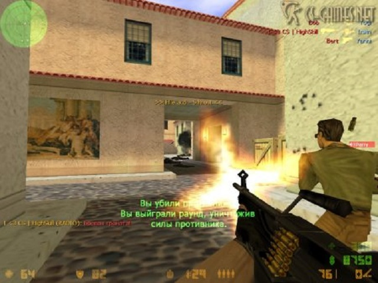
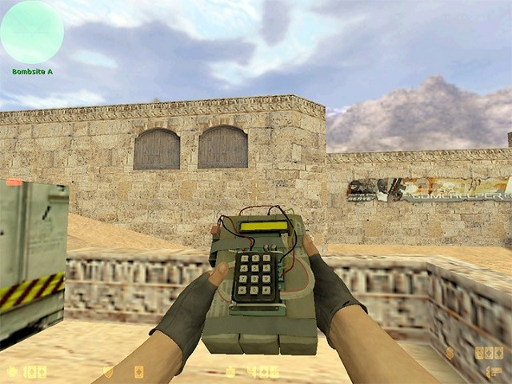

История игры
Counter-Strike, также известная как Half-Life: Counter-Strike — многопользовательская компьютерная игра в жанре шутера от первого лица,
разработанная и выпущенная для Microsoft Windows американской компанией Valve. Первоначально Counter-Strike представляла собой пользовательскую
модификацию к игре Half-Life, разработанную энтузиастами Минем Ле и Джессом Клиффом в 1999 году; в дальнейшем Valve наняла обоих разработчиков
на работу и приобрела у них права интеллектуальной собственности на игру, в 2000 году выпустив доработанную версию Counter-Strike уже как самостоятельную игру.
Игра была в разные годы портирована на ряд платформ, в том числе macOS, Linux и Xbox.
Игровой процесс
Задачей для команды террористов является подрыв бомбы в определённом месте, которых на сбалансированных картах обычно два.
Бомбу несёт один из игроков команды (bomber), но может её скинуть как обычное оружие. Этот игрок отображается на радаре оранжевым цветом;
будучи скинутой, сама бомба обозначается мигающей оранжевой точкой (или с учётом высоты — двумя перпендикулярными линиями),
а при закладке — мигающим крестом (только для команды Т). У игрока, несущего бомбу, есть рюкзак на спине, а наличие бомбы отображается слева на экране соответствующим значком.
При нахождении в зоне закладки значок начинает мигать красным цветом. В момент закладки всем игрокам обеих команд передаётся сообщение The bomb has been planted.
У CT есть возможность сократить время разминирования бомбы, купив Defusal Kit (разг. щипцы, кусачки), с которым оно составляет 5 секунд (без него — 10 секунд).
Время закладки бомбы составляет всего 3 секунды. Первые карты этого типа появились в beta 4.0, ими были Nuke, Dust, Prodigy. Карты этого сценария имеют префикс de_.
Команды
Подразделение террористов
Подразделение «Феникс» (англ. Phoenix Connexion) — первый по списку террористический класс в Counter-Strike.В реальной жизни группировка не
существует и является вымышленной. Подразделение «Феникс» занимается преступлениями и террористическими операциями в Восточной Европе.
Была образована после развала СССР. Известна своей жестокостью и убивает всех, кто встает у нее на пути.
Подразделение «Феникс» (англ. Phoenix Connexion) — первый по списку террористический класс в Counter-Strike.В реальной жизни группировка не
существует и является вымышленной. Подразделение «Феникс» занимается преступлениями и террористическими операциями в Восточной Европе.
Была образована после развала СССР. Известна своей жестокостью и убивает всех, кто встает у нее на пути.
Арктические мстители (англ. Arctic Avengers) — третий класс команды террористов серии игр Counter-Strike.Шведская террористическая группа, появилась в 1977 г.
Известна взрывом посольства Канады в 1990 г.Эту модель игрока рекомендуется выбирать на зимних картах
(вроде Survivor и Office, а также на модификациях популярных карт зимнего стиля).
Повстанцы также партизаны (англ. Guerilla Warfare) — четвёртый класс команды террористов в серии игр Counter-Strike.Террористическая группировка,
образовалась на Среднем Востоке. Эта группировка известна своей жестокостью. Свое отвращение к американскому образу жизни они продемонстрировали
в 1982 году, бросив бомбу в автобус с несколькими рок-н-ролльными группами.
Подразделение спецназа
SEAL Team 6 (SEa Air Land) или ВМС США, иногда называемые как: «морские котики», Urban или просто SEAL — является первым классом команды
спецназа в серии игр Counter-Strike.ST-6 (позже DEVGRU) — подразделение морских котиков. Образовано в 1980 году. Готово в любой момент пресечь
любые террористические акты, направленные против Америки, в любой точке мира.
GSG-9 (нем. GrenzSchutzGruppe-9, рус. Группа охраны границ 9) — является вторым классом команды спецназа в Counter-Strike.Подразделение GSG-9
появилось в ходе трагических событий на Олимпийских играх 1972 года в Мюнхене (Германия), приведших к гибели нескольких атлетов из Израиля.
SAS (англ. Special Air Service, рус. Особая воздушная служба или САС Специальная Авиадесантная Служба) — является третьим классом команды спецназа
в серии игр Counter-Strike.Всемирно известное подразделение SAS было образовано Дэвидом Стирлингом во время Второй Мировой войны.
Его роль тогда заключалась в сборе разведанных в тылу врага и организации саботажа и диверсий на объектах противника.
GIGN (франц. Groupe d'Intervention de la Gendarmerie Nationale, рус. Группа вмешательства Национальной жандармерии Франции) — четвертый класс команды
спецназа в серии игр Counter-Strike.Элитное антитеррористическое подразделение Франции — GIGN — способно противостоять любым крупномасштабным действиям террористов.
Несмотря на малую численность (около 100 человек), провело множество успешных антитеррористических операций.
Карты (мои любимые)
de_dust_2
Карта представляет собой пустынную местность, в некоторых местах которой были оставлены зелёные
ящики с химикатами — это места, которые террористы должны взорвать.
de_nuke
Карта представляет собой ядерный ракетный комплекс, который террористы пытаются взорвать.
Карта довольно небольшая, из оружия тут подойдут дробовики, пистолеты-пулемёты, штурмовые винтовки и гранаты.
de_inferno
Карта представляет собой небольшой городок или деревню с узкими улицами и разными ходами через дома.
По крышам лазить здесь, увы, нельзя, зато можно оказаться на балконах или даже пробраться под домами.
Где-то под поселением расположен газопровод, который террористы и пытаются подорвать.
cs_office
Действия происходят зимой в офисном здании с парковкой и двором.База спецназа находится в гараже, в то время как террористы находятся
внутри здания и удерживают заложников.
Самые популярные оружия
Desert Eagle
Единственный экземпляр из категории «Пистолеты» пробивающий стены. С первого выстрела в голову убивает даже защищённого каской противника.
Закупается чаще снайперами с AWP, поскольку очень мощный и помогает быстро убить противника на ближних дистанциях.

ak-47
АК-47 после AWP является наиболее сильным оружием в игре. Предстаёт как главный соперник M4A1. «Калаш» проигрывает в точности M4A1,
но по мощности превосходит. Поэтому выбор зависит от карты — если нужно «чуть-чуть поснайперить», лучше брать американский аналог,
если нужно «поиграться» с бронированными противниками — отечественный. Если вам надо убить противника на дальнем расстоянии из АК-47,
то следует стрелять во врага очередями по 1-2 пули — это позволит стрелять точно.
Maverick Colt M4A1 Carbine
M4A1 (в народе «эмка») — штурмовая винтовка во всей серии CS. Является главным соперником AK-47, отличается от которого немного меньшим уроном,
но большей точностью. Также к «Эмке» прилагается глушитель, который повышает точность,снижает уровень шума и урон при стрельбе.
AWP
В народе очень популярна и известна как слонобой или слон (для некоторых — весло). Свое название получила из-за очень большой
убойной силы — одного попадания за очень редким исключением достаточно. Имеет странную особенность: без оптического прицела попадает куда угодно,
но только не в цель. Двигаясь, попасть невозможно в принципе. С оптикой — попадание при движении тоже сильно затрудняется. Равно как и само движение.
Многие считают, что снайпером-то и надо быть. Это, мол, самые серьезные парни и попасть из слонобоя — как раз плюнуть. Сначала вроде бы так и есть,
но как только происходит встреча с отцами, а тем более с грамотно организованным кланом, то все забивают на снайперское ремесло.
И естественно — не зря ведь считаются мегапапами хорошие снайперы. Что тут сказать? Тренируйтесь и запомните главное правило снайпера: one shot — one kill.
Мало того, известно еще со времен TF — стрельнул раз, максимум два раза, смени позицию..